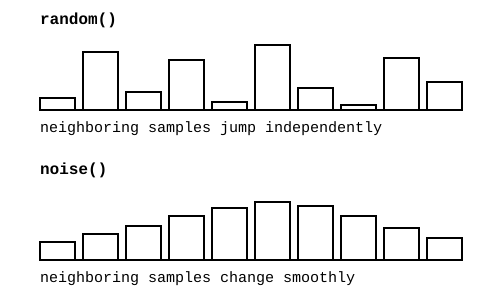
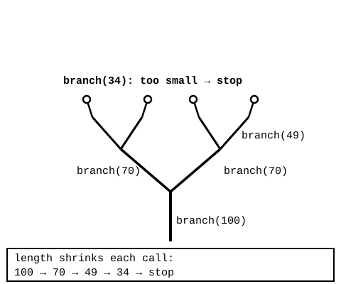

Open and compare
Open Noise Grid and Recursive Tree. Nothing else to prepare.
Aalto University
Last session, you called your own functions to build a system. Now we will see two different ways one small rule can create a lot of visual complexity: noise() extends the grid and mapping ideas from Sessions 02 and 04 into smooth, related variation instead of random jumps, while recursion asks what happens when a function calls itself.


Open Noise Grid and Recursive Tree. Nothing else to prepare.
Run each sketch, change the noise scale or the branch multiplier, then cause a safe mistake on purpose (branches curling instead of forking), notice the wrong behavior with no error, and fix it.
Save your own organic grid or branching form. Write down what noise() controls in one sketch and what the stopping condition controls in the other.
Open Noise Grid first for smooth, related variation, then Recursive Tree for a function that calls itself. Both are required; neither depends on the other.
Use these source files when you are working in Processing or comparing p5.js with the original syntax.